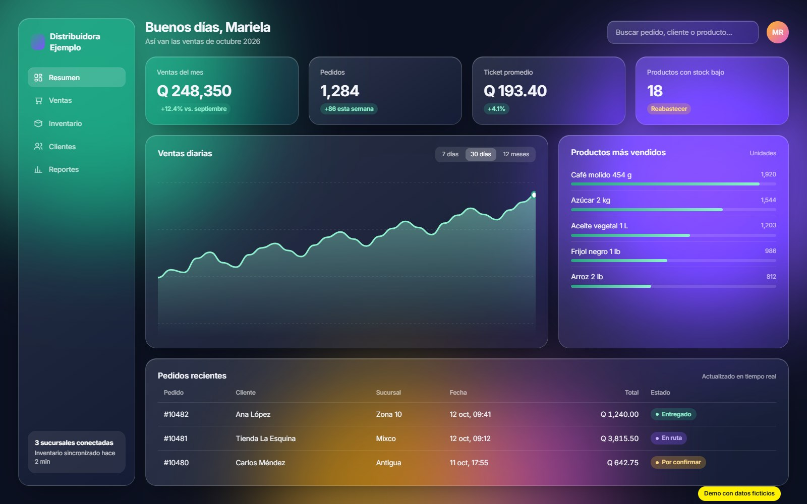
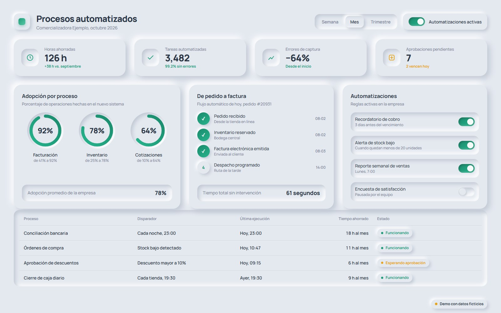

Menos trabajo manual. Más control de tu negocio.
Creo los sistemas, sitios web y procesos digitales que tu empresa necesita para vender más y operar mejor. Cuéntame tu caso y te digo cuánto costaría.
Primera asesoría sin costo. Te respondo personalmente.

- Productos digitales
- Sitios web, sistemas y aplicaciones
- Procesos
- Diagnóstico, automatización y capacitación
- Adopción digital
- Acompañamiento para que tu equipo use la tecnología
¿Tu empresa todavía funciona así?
- Horas copiando datos entre hojas de cálculo.
- Sistemas que no se hablan entre sí.
- Procesos que se detienen cuando falta una persona.
- Herramientas que pagas y nadie usa.
Cada día así te cuesta dinero: en horas perdidas, en errores y en clientes que se van con quien responde más rápido.
Cuéntame tu caso por WhatsApp
800 × 1000 px
No necesitas más herramientas. Necesitas un plan que funcione.
Analizo cómo opera tu empresa, te digo qué conviene digitalizar primero según tu presupuesto y lo implemento de principio a fin.
Tienes un solo responsable para todo: sin coordinar a cinco proveedores y sin jerga técnica. Recibes propuestas claras, con precio y plazos.
Pregúntame cuánto costaría tu proyectoElige por dónde empezar.
Numerado con numerales mayas: cada punto vale uno.
-

Demo con datos ficticiosCaptura de proyectoassets/proyecto-1.jpg
1600 × 1000 pxServicio 1Productos digitales
Un sitio web que te traiga clientes y sistemas a la medida que ordenen tu operación: inventarios, ventas, reportes o lo que tu negocio necesite.
Ideal si tu negocio vive en hojas de cálculo o quieres vender y recibir clientes en línea.
Cotizar un sitio o sistema -

Demo con datos ficticiosCaptura de proyectoassets/proyecto-2.jpg
1600 × 1000 pxServicio 2Adopción digital y mejora de procesos
Asesoría para ordenar tus procesos, automatizar tareas repetitivas y lograr que tu equipo use la tecnología de verdad.
Ideal si ya invertiste en herramientas y no ves resultados, o no sabes por dónde empezar.
Pedir una asesoría
Así empezamos a trabajar.
- Paso 1
Me escribes por WhatsApp
Me cuentas tu situación en un mensaje. Sin formularios ni llamadas de venta.
- Paso 2
Conversación inicial sin costo
Entiendo qué necesitas y te doy un primer rango de precio.
- Paso 3
Propuesta clara
Recibes alcance, precio y plazos por escrito. Tú decides si avanzamos.
- Paso 4
Implementación y acompañamiento
Trabajo por etapas para que veas avances pronto, capacito a tu equipo y me quedo hasta que todo funcione.
Imagina tu empresa dentro de unos meses.
- Toda tu información en un solo lugar, al día y a la mano.
- Las tareas repetitivas se hacen solas y tu equipo se enfoca en vender y atender.
- Menos errores y menos dependencia de una sola persona.
- Decisiones con datos reales, no con suposiciones.
Lo que todos preguntan.
¿Cuánto cuesta?
Depende de lo que necesites, por eso no vendo paquetes genéricos que terminas pagando de más. Escríbeme con tu caso y en la primera conversación te doy un rango de precio, sin costo. Si avanzamos, recibes el precio por escrito antes de empezar.
Pedir un rango de precio¿Mi empresa es muy pequeña para esto?
No. La propuesta se ajusta a tu tamaño y presupuesto, y empezamos por lo que más rápido te devuelve la inversión.
¿Cuánto tiempo toma?
Depende del alcance. Trabajo por etapas para que veas resultados desde las primeras entregas, y en la propuesta te indico los plazos de cada una.
Ya tengo sistemas. ¿Tengo que cambiar todo?
No. Primero aprovechamos lo que ya funciona y conectamos lo que hoy está aislado. Solo cambiamos lo que de verdad te frena.
¿Qué pasa después de la entrega?
Capacito a tu equipo y te ofrezco soporte para que todo siga funcionando. No te quedas con un sistema que nadie sabe usar.
Tu cotización empieza con un mensaje.
Escríbeme por WhatsApp, cuéntame qué necesitas y te digo cómo lo resolvería y cuánto costaría. La primera conversación no tiene costo.
O toca un tema y el mensaje se escribe solo: